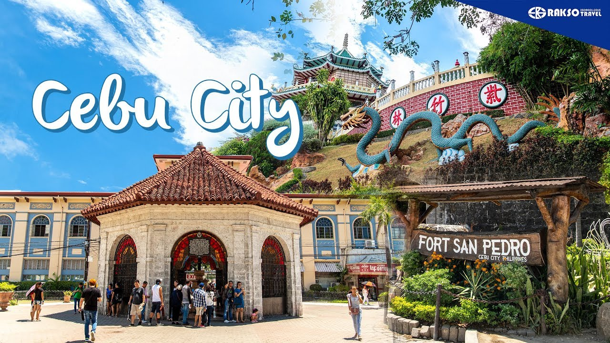

CEBU CITY

Cebu City, Cebu Island, south-central Philippines. Located on Cebu Island’s eastern coast, it is protected by offshore Mactan Island and by the inland Cordillera Central.
It is one of the country’s largest cities and is a bustling port. Its harbour is provided by the sheltered strait between Mactan Island and the coast.
The country’s oldest settlement, it is also one of its most historic and retains much of the flavour of its long Spanish heritage. A thriving port occupied the site when Ferdinand Magellan, the Portuguese navigator and explorer, landed there on April 7, 1521.
He sealed a blood compact with Humabon, the chief of Cebu, but was killed later by Chief Lapulapu of nearby Mactan Island. On April 27, 1565, Miguel López de Legazpi and the friar Andrés de Urdaneta arrived on Cebu and founded the first Spanish settlement and Catholic mission in the Philippine archipelago.
For six years, until Legazpi’s removal to Manila, Cebu was the Spanish colonial capital. It remained the primary Spanish bastion in the southern part of the Philippines.
Cebu City is a Roman Catholic archbishopric and is a centre of education. It is the site of five major universities: the University of San Carlos (1595), Cebu Institute of Technology (1946), Southwestern University (1946), University of the Southern Philippines (1927), and University of the Visayas (1919).
The ruins of the Spanish Fort San Pedro are near the harbour. Pop. (2015) 922,611; (2020) 964,169.
FACTS ABOUT CEBU
Cebu City, officially known as the City of Cebu, is located in the Central Visayas region of the Philippines. It is the capital of the Cebu Province. Cebu City comprises Cebu Island and more than 150 smaller surrounding islands and islets.
With a population of 964,169 (as of 2020) people, it is the sixth-most populated city in the Philippines and the most populous in the Visayas region.
Cebu Island is one of the best islands in the world. But it’s not just us who thinks so. Condé Nast Traveler’s also voted it one of the World’s Best Islands in 2016, 2017 and 2019.
Tourism is one of the city’s most important industries; due to its wonderful reputation, it is one of the most visited in islands in the Philippines by both domestic and foreign visitors.
On the 4th of June 1565, Rajah Tupas, the last Rajah of Cebu, signed the Treaty of Cebu with Spanish navigator Miguel Lopez de Legazpi. This was after the colonisers attacked and destroyed the village of Rajah Tupas, where they founded the first Spanish settlements.
Tupas and Legazpi signed the ‘Treaty of Cebu’; thus, Cebu became the first and oldest Spanish settlement in the Philippines
BACK TO THE HOMEPAGE